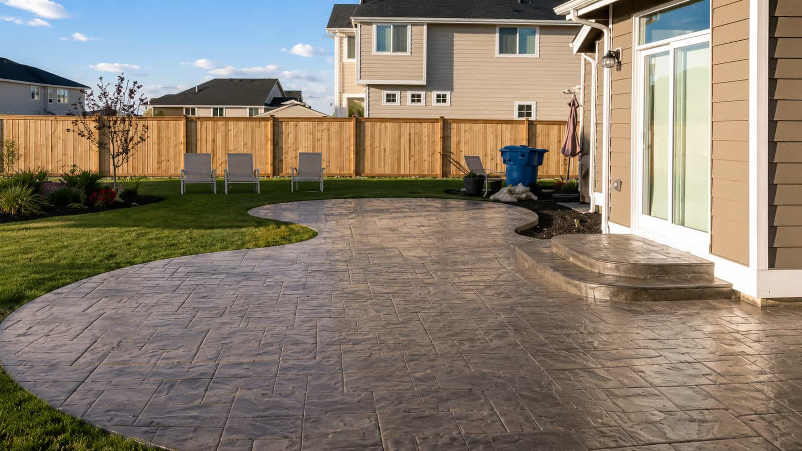
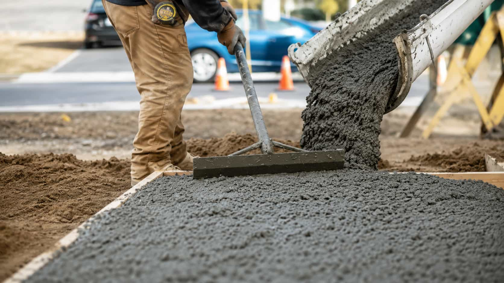

Scope
Compare approximate dimensions, surface use, replacement needs, repair concerns, and included work.
Explore common concrete project categories and compare available local provider options. SlabWay is an independent provider-matching platform and does not perform concrete work directly.

Compare provider options for driveway replacement, new pours, access notes, surface prep, and finish preferences.
Explore optionReview patio provider responses around layout, outdoor use, finish type, drainage notes, and project timing.
Explore optionOrganize slab details such as size, base preparation, access, intended use, and provider-specific scope.
Explore option
Compare repair options for cracks, surface wear, uneven areas, patching notes, and provider recommendations.
Explore optionShare pattern goals, color direction, border ideas, texture preferences, and decorative finish expectations.
Explore optionCompare provider options for paths, entryways, access routes, surface finish, and layout considerations.
Explore optionConcrete provider responses can vary. These checklist points help homeowners review provider-supplied details before making a hiring decision.
Compare approximate dimensions, surface use, replacement needs, repair concerns, and included work.
Ask how providers describe removal, base preparation, grading, cleanup, and site readiness.
Review provider details about finish type, decorative choices, sealant, texture, and surface goals.
Access, slopes, gates, parking, drainage, and connection points may affect provider responses.
Provider availability can vary by location, season, project size, weather, and site conditions.
Review provider-supplied warranty details, written scope, payment terms, license, and insurance.
SlabWay helps homeowners organize concrete project requests before comparing independent local provider options. The platform does not perform concrete work directly.
Concrete projects can vary by surface type, size, access, preparation needs, finish preferences, and provider availability. SlabWay gives homeowners a clearer way to describe project details before reviewing responses from participating providers.
Submitting a request through SlabWay does not create a service agreement. Any pricing, schedule, warranty, scope, or service terms are provided by independent providers and should be reviewed before hiring.
SlabWay helps homeowners organize project information before reviewing responses from participating independent providers.
Smooth finish requests are easier to compare when homeowners prepare notes about surface use, size, access, preparation, and provider-supplied maintenance terms.
Decorative, repair-focused, and replacement-focused requests may involve different provider availability and service terms.
Organize project type, size, access, surface condition, timing, and finish preferences.
Compare participating provider responses around scope, schedule, preparation, and terms.
SlabWay helps with matching and request organization, not direct concrete work.
You decide whether to continue, compare further, pause, or contact a provider directly.
These answers explain how category comparison works on SlabWay.
SlabWay helps with request matching. Providers supply their own scope, price, timing, warranty, and service terms.